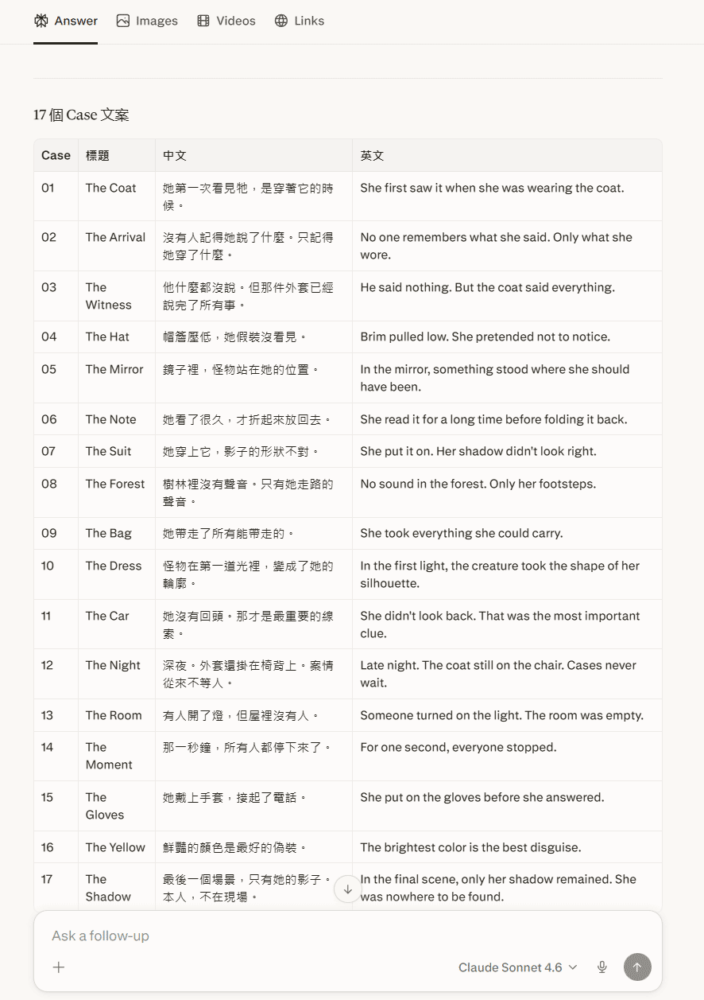
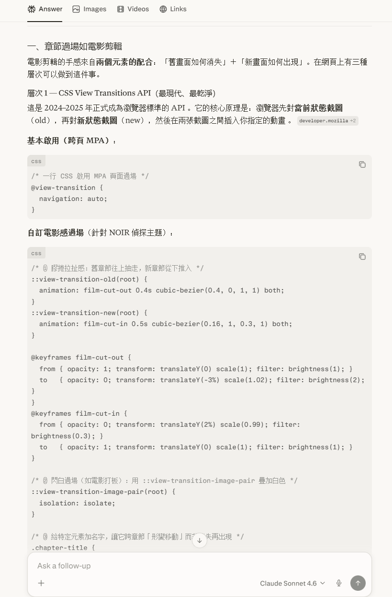
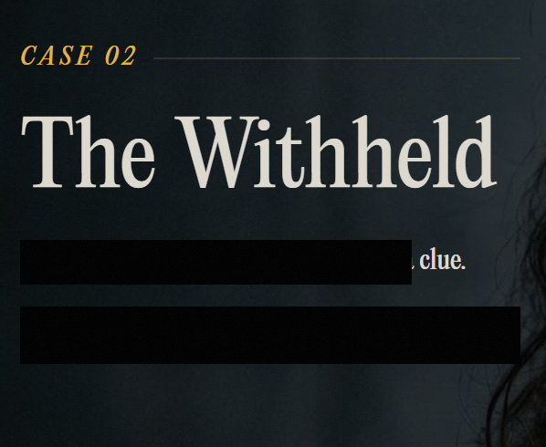
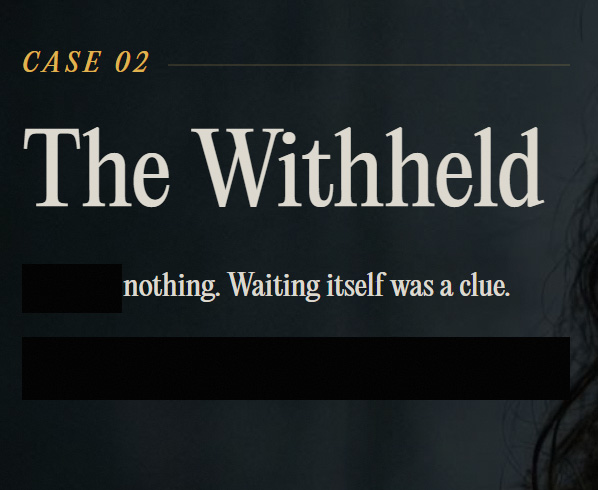
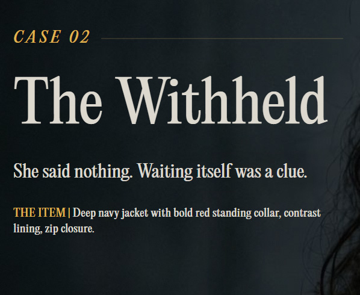

Concept: Ideation and Web Architecture with AI
The concept centers on a fictional fashion brand called SECOND NATURE. The campaign page follows a protagonist through a series of events, using 16 distinct scenes to showcase clothing through cinematic, narrative-driven fashion photography.
The main characters — a woman and a dark creature — are carried over from a previous project. Drawing inspiration from film, the woman explores a series of suspenseful, cinematic scenarios dressed in SECOND NATURE pieces.
The process started with conversations in Perplexity, using both Claude and ChatGPT to work through the content, structure, and execution details. After several rounds of discussion, the direction gradually came into focus.


Beyond content, the technical direction was also established at this stage. Early testing was done to verify whether the concept was actually buildable.
Various interaction techniques were prototyped using Claude's web interface. Any promising visual or motion effects were exported as HTML and later imported into Claude Code for refinement.
Several key decisions were locked in during this phase: a single-page layout, a 5-second hero video at the top, and a scroll-driven video playback — where the video timeline advances as the user scrolls.
To match the detective story tone, Claude was asked to suggest suitable interaction techniques — including transitions between scenes. Two features were selected:
- Redacted Reveal — a text effect that simulates classified information being uncovered. Each line of text is covered by a black overlay that slides away in sequence after a scene transition, like a declassified document being read for the first time.
- Hotspot Annotation — each scene features one clickable marker on the outfit that expands and collapses to reveal details about the garment.



After multiple rounds of back-and-forth with Claude — refining direction, testing motion ideas, and finalizing interaction logic — the content and approach were solid enough to move into visual production.